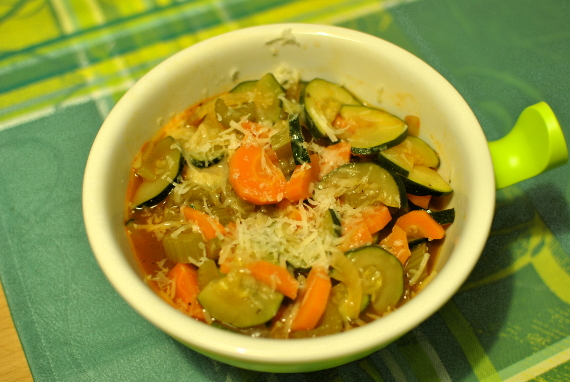

Italienische Gemüsesuppe

- Zubereitung: ca. 40 Minuten
- Für 4 Personen
Zutaten
- 200 g kleine Nudeln (z.B. Ditali)
- 1 Zwiebel
- 4 Stangen Staudensellerie
- 3 Möhren
- 2 EL Olivenöl
- 2 EL Tomatenmark
- 1 l Fleischbrühe
- 3 kleine Zucchini
- 2 Knoblauchzehen
- 4 EL frisch geriebener Parmesan
Zubereitung
- Nudeln nach Packungsangabe in reichlich kochendem Salzwasser al dente kochen, abgießen, abtropfen lassen und auf 4 tiefe Teller verteilen.
- Zwiebel schälen, halbieren und in Streifen schneiden. Sellerie und Möhren waschen, putzen bzw. schälen und in Scheiben schneiden. Öl erhitzen, Zwiebel darin glasig werden lassen. Sellerie, Möhren und Tomatenmark dazugeben. 2 Minuten schmoren lassen.
Die Brühe angießen und 15 Minuten köcheln lassen.
- Zucchini waschen, längs halbieren, in Scheiben schneiden und zugeben. Knoblauch schälen und dazupressen. Die Suppe 10 Minuten köcheln lassen und mit Salz und Pfeffer abschmecken.
- Die Suppe auf die Nudeln in den Tellern schöpfen und mit Parmesan bestreut servieren.